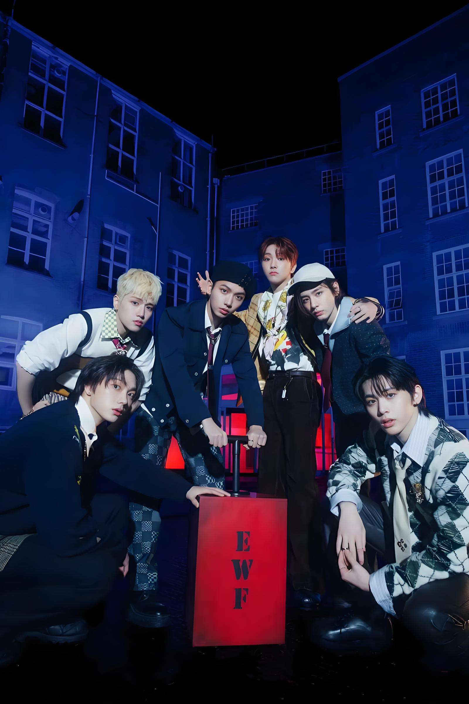

Est. 2023 · HYBE Labels · KOZ Entertainment
BOYNEXTDOOR
The boys who live next door — and stole our hearts
Meet the Members ↓Who We Are
THE BOYS
NEXT DOOR
BOYNEXTDOOR (보이넥스트도어) is a six-member K-pop boy group that debuted on under KOZ Entertainment, a subsidiary of HYBE. Their name reflects their concept — relatable, genuine boys who feel like your next-door neighbors, telling honest stories about youth, love, and heartbreak.
Their music stands apart from typical K-pop with its indie-pop and alternative influences, confessional lyrics, and raw emotional authenticity. From heartfelt ballads to energetic pop-rock anthems, every song feels like a page torn from a personal diary.
Their fandom name is ONEDOOR — because BOYNEXTDOOR opens the door to their hearts for their fans, and fans open the door to theirs.
6
Members
4+
EPs Released
100M+
Streams
2023
Debut Year
DOOR
Fandom Name
KOZ
Label

2023
Debut Year
Get to Know Them
THE MEMBERS
Members of BOYNEXTDOOR
Their Journey
MILESTONES
Official Debut "WHO"
BOYNEXTDOOR debuts with their first three-track single album "WHO" under KOZ Entertainment and HYBE Labels, introducing 6 members to the world.
1nd EP "WHY"
The songs carry forward the theme of love, expanding its emotional scope. The album centers on turbulent feelings and their “reasons,” portraying the boys’ first encounter with heartbreak.
First Music Show Win
BOYNEXTDOOR achieves their first music show win just months after debut.
2nd EP "HOW"
The second mini album HOW? completes the “first love trilogy,” bridging the narrative between the debut single WHO! and the first mini album WHY... While WHO! captures the thrill of first love and WHY.. reflects its pain, HOW? turns to the diverse situations and emotions that arise in moments of meeting and parting.
1st Anniversary and Fan Meeting
One year since debut, BOYNEXTDOOR celebrated with fans in Seoul.
Debuted in Japan
BoyNextDoor debuted in Japan with the maxi single "And,", which features Japanese re-recordings of the group's past singles and the Japanese-language song "Good Day"
3rd EP "19.99"
With the incomplete number “19.99,” BOYNEXTDOOR portrays the moment just before the height of youth at twenty. The album candidly records the lingering innocence and intense inner struggles of young people standing at the threshold between their teens and their twenties.
4th EP "No Genre"
The word "genre" defines artistic categories like music and film, but it can also act as a limitation-an invisible boundary that confines creativity and potential.They are setting out to reject those boundaries, declaring their intent to make the music they " want, without labels or limits.
5th EP "The Action"
The Action captures BOYNEXTDOOR’s drive for growth. It suggests that progress comes not from staying still, but from constant challenge and action. With this album, the group steps forward without hesitation, embracing new possibilities with a fearless and forward-looking attitude.
World Tour and Beyond
The group continues to expand its global presence and connect with fans worldwide.